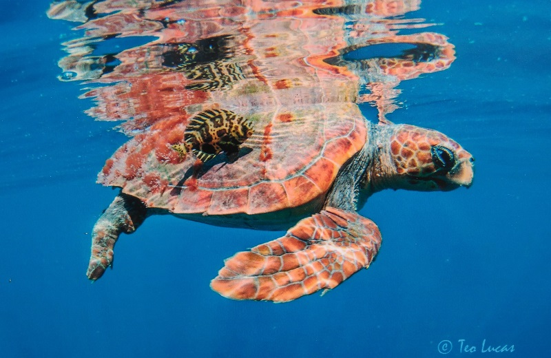

(Caretta caretta)

La tortuga boba se localiza prácticamente en todos los mares y océanos cálidos del planeta, dependiendo de su ciclo de vida, es posible encontrarla tanto en mar abierto como en aguas poco profundas, zonas costeras, bahías y estuarios, acercándose únicamente a las playas de nacimiento para el desove. Los neonatos se dirigen a mar abierto buscando refugio. Los adultos y juveniles se localizan más en la plataforma continental o los estuarios costeros de aguas poco profundas. Habita los océanos Atlántico, Índico y Pacífico, y en el Mediterráneo se observan una gran cantidad de tortugas de esta especie. En los meses de invierno migran hacia aguas más tropicales y subtropicales. Normalmente frecuentan zonas costeras cerca de arrecifes de coral, lagunas de agua salada y bocas de ríos.
Caracteristicas
- Son reptiles de caparazón duro.
- Puede medir más de un metro de longitud de la cabeza a la cola.
- Puede medir más de un metro de longitud de la cabeza a la cola.
- Se diferencia de otras especies por tener entre 4 y 5 escudos en la cabeza y 5 pares de escudos a los lados.
- Son especies migratoria.
MENU PRINCIPAL